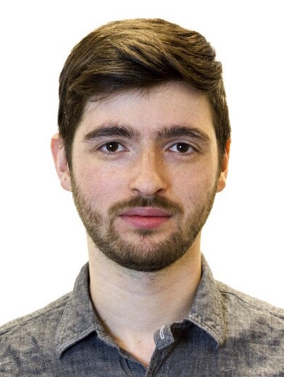

Fabrication-Aware Design with Performative Criteria
Yuliy Schwartzburg, Director: Mark Pauly
[Ph.D. Thesis] 2015
High-contrast Computational Caustic Design
Yuliy Schwartzburg, Romain Testuz, Andrea Tagliasacchi, Mark Pauly
ACM Transactions on Graphics (Proc. of ACM SIGGRAPH 2014)
[paper]
[video]
[youtube]
[fast forward]
Creating Personalized Jigsaw Puzzles
Cheryl Lau, Yuliy Schwartzburg, Appu Shaji, Zahra Sadeghipoor, Sabine Süsstrunk
International Symposium on Non-Photorealistic Animation and Rendering, 2014
[paper]
[video (short)]
[video (long)]
Interactive Design Exploration for Constrained Meshes
Bailin Deng, Sofien Bouaziz, Mario Deuss, Alexandre Kaspar, Yuliy Schwartzburg, Mark Pauly
Computer-Aided Design 2014
[paper]
[video]
[youtube]
Fabrication-aware Design with Intersecting Planar Pieces
Yuliy Schwartzburg, Mark Pauly
Computer Graphics Forum (Proc. Eurographics) 2013
[paper]
[extended paper]
[youtube]
Automatic Generation of Constructable Brick Sculptures
Romain Testuz, Yuliy Schwartzburg, Mark Pauly
Eurographics 2013 Short Paper
[paper]
[supplementary material]
[software]
[youtube]
Exploring Local Modifications for Constrained Meshes
Bailin Deng, Sofien Bouaziz, Mario Deuss, Juyong Zhang, Yuliy Schwartzburg, Mark Pauly
Computer Graphics Forum (Proc. Eurographics) 2013
[paper]
[video]
[youtube]
Shape-Up: Shaping Discrete Geometry with Projections
Sofien Bouaziz, Mario Deuss, Yuliy Schwartzburg, Thibaut Weise, Mark Pauly
Symposium on Geometry Processing 2012
[paper]
[video]
[library]
[youtube]
Design and Optimization of Orthogonally Intersecting Planar Surfaces
Yuliy Schwartzburg, Mark Pauly
Computational Design Modelling 2012 (Proceedings of the Design Modelling Symposium 2011)
[paper